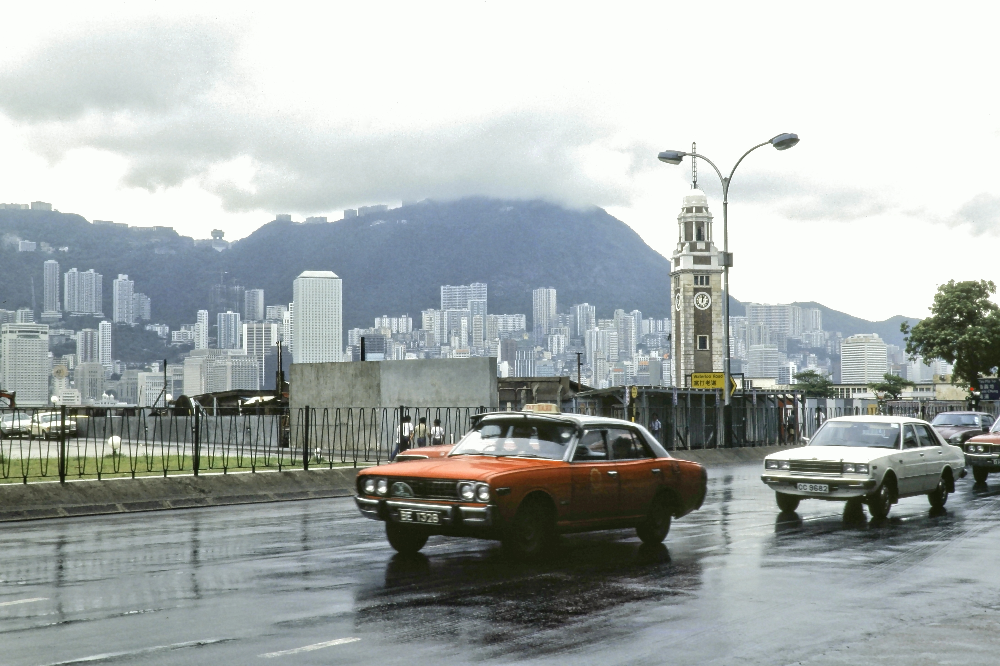
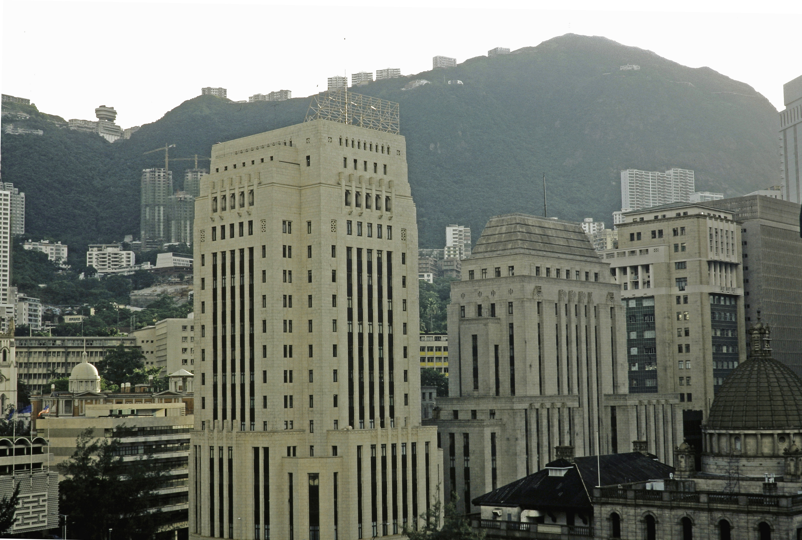
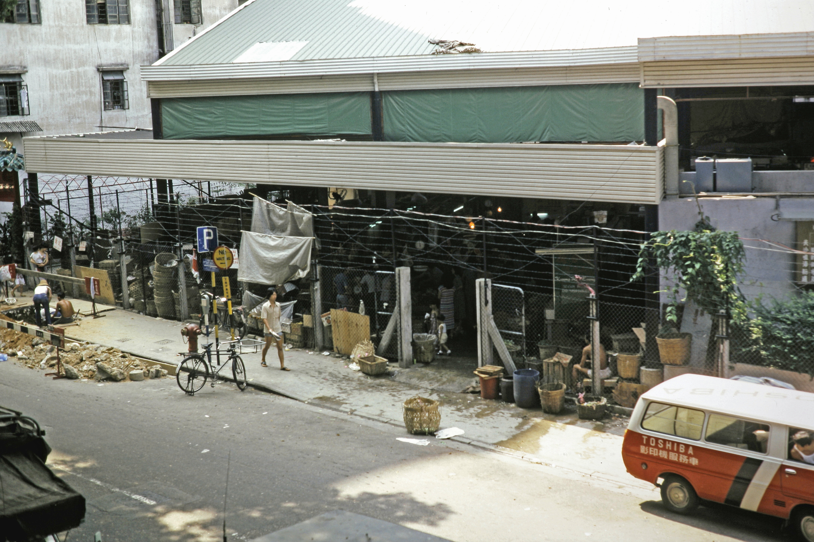
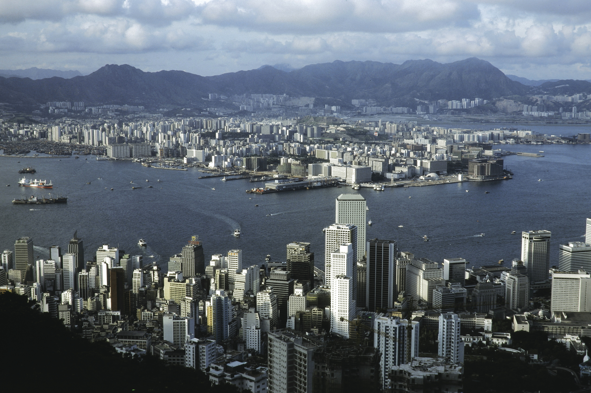
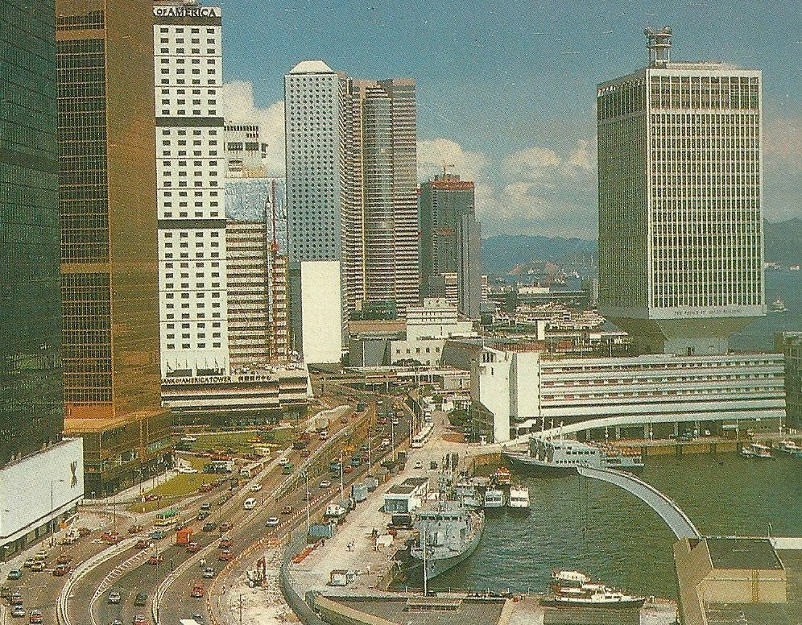

Wednesday · Film
(, c. 1979–1984): TVB-trained filmmakers, location shooting, and contemporary Hong Kong on screen
In the late 1970s and early 1980s, a generation of filmmakers trained at television and overseas film schools moved into theatrical features. 's (, 1982), 's (, 1979), 's (, 1981), and 's (, 1982) brought location shooting, fragmented narrative, contemporary social issues, and a mix of art-house experimentation and commercial genre reinvention to . The movement coincided with and preceded the (1984) that would shape 1997 anxiety and later Hong Kong filmmaking including and 's generation.


is a critical and journalistic label applied after the fact, not a manifesto or formal movement. The term emerged in film criticism and retrospectives in the 1980s and 1990s to describe a loose generation of filmmakers who entered the Hong Kong film industry in the late 1970s and early 1980s. Boundaries are fuzzy: some scholars begin with 's ; 's (, 1978) is a theatrical Cantonese comedy about film extras, and the notes it is mainstream and lacks many markers, so some doubt it was the movement's first project. Other scholars include later works into the mid-1980s. The movement overlaps with commercial genre cinema, television production, and the transition from Mandarin to Cantonese as the dominant language of Hong Kong cinema. Not all these filmmakers called themselves a wave or shared a single aesthetic. (, , Fruit Chan) emerged later and are distinguished from the , though the line is permeable. Film stills from these titles are often still under copyright; this lesson uses public-domain and clearly licensed images — primarily Hong Kong cityscapes, harbor scenes, and period photographs — each captioned honestly. No AI people. No copyrighted stills presented as free images.
Select any words, or tap a dotted term.
- Before 1975 Shaw Brothers studios, Cantonese cinema decline, TVB television training In the 1950s and 1960s Hong Kong cinema was dominated by and Cathay studios, producing Mandarin-language (martial arts), melodramas, and musicals for regional markets. thrived in the 1950s and 1960s but declined by the early 1970s, overshadowed by Mandarin productions. In 1967 () launched, becoming Hong Kong's dominant Cantonese-language television broadcaster. trained a generation of directors, writers, actors, and crew in fast-paced episodic drama production. By the mid-1970s many TVB-trained directors wanted to move into theatrical features. Meanwhile Hong Kong sent students to film schools abroad: the , the (), and others. These students returned with knowledge of European art cinema, , and the .
- 1978–79 Yim Ho's The Extras, Tsui Hark's The Butterfly Murders: first gestures In December 1978 (), trained in the UK and having worked at , releases (), a theatrical Cantonese comedy about film extras. The notes it is mainstream and lacks many markers, so some doubt it was the movement's first project. In 1979 (), trained at Texas and New York film schools and having worked in television, directs () for independent producer Ng See-yuen. The film mixes conventions with gothic horror and art-house editing. It is a commercial disappointment but marks as a genre experimenter. (), trained at the and having worked at , directs her first feature (, 1979), a psychological thriller that shows her interest in character psychology and Hong Kong locations.
- 1980–81 Tsui's Dangerous Encounter, Hui's The Story of Woo Viet, Fong's Father and Son In 1980 directs (), a violent thriller about disaffected Hong Kong youth who stumble into a criminal underworld. The film's nihilism and ultraviolence shock audiences; censors force cuts. It establishes 's willingness to provoke and his fusion of genre with social critique. In 1981 directs (), about a Vietnamese refugee in Hong Kong, shot on location in the Philippines. The film addresses the crisis with documentary-like attention to displacement and statelessness. Also in 1981 (), trained at and having worked in Hong Kong film and television, directs (), a semi-autobiographical drama written by Chan Chiu, Lillian Lee and Alfred and produced by Feng Huang (Phoenix). Veteran character actor Shi Lei plays the father, with Chu Hung, Yung Wai-man and others. The film follows a low-income father who puts his hopes in his son (who dreams of film school in America), using real Hong Kong locations and social realism influenced by . wins Best Film and Best Director at the 1st Hong Kong Film Awards and was shown in the Information Show section of the 31st Berlin International Film Festival. It is recognized as a landmark.
- 1982 Boat People: Ann Hui's refugee epic In 1982 directs (), produced by Xia Meng (Hsia Meng) for Bluebird Movie Enterprises. The film follows Japanese photojournalist Akutagawa (played by George Lam) who revisits Vietnam after 1975 and sees the harsh reality of the new regime and its New Economic Zones. He follows a poor family including the girl Cam Nuong (Season Ma). shoots on Hainan Island and Hong Kong; was the first Hong Kong production to film in mainland China. Andy Lau was cast on location. Cinematography by Chung-kei and David Chung. The film combines melodrama, political critique, and harrowing realism. is a commercial and critical success in Hong Kong, wins Best Film (plus Best Director, Best Screenplay and others) at the 2nd Hong Kong Film Awards, and is screened out of competition at Cannes in 1983. It establishes as a major voice. Also in 1982 (), having worked at , directs (), about disaffected Hong Kong teenagers. 's background as a film editor (he cut many films) gives a fragmented, elliptical rhythm and art-house pacing rare in Hong Kong commercial cinema.
- 1983–84 Fong's Ah Ying, Tsui's Film Workshop, Sino-British Declaration shadow In 1983 directs (), a docudrama about a woman working multiple jobs to survive in Hong Kong's informal economy. The film continues 's neorealist method and social observation. In 1984 founds , an independent production company and special-effects house. will produce 's later genre reinventions: the Zu: Warriors from the Magic Mountain sequel, the , and other and action films that blend energy with commercial spectacle. Also in 1984 the is signed, announcing that Hong Kong will be returned to China in 1997. The Declaration creates widespread anxiety about Hong Kong's future under Chinese sovereignty. This 1997 anxiety will shape Hong Kong cinema for the next decade, fueling identity films, emigration narratives, and a sense of urgency in filmmaking. The of the is considered largely complete by 1984, though its directors continue working and second-wave filmmakers emerge.
- Mid-1980s Commercial genre reinvention: heroic bloodshed, second-wave directors In the mid-1980s the energy of the feeds into commercial genre cinema. (), who began directing in the 1970s, makes (, 1986) with producer , launching the : stylized gunfights, male melodrama, loyalty codes, and slow-motion violence. The film stars () and becomes a massive hit. follows with (, 1989) and (, 1992), defining 1990s Hong Kong action cinema. A of directors emerges: () makes (, 1987), a ghost story about Hong Kong memory and identity; () makes (, 1988), his debut feature blending fragmentation with gangster romance. will become the most internationally celebrated Hong Kong director of the 1990s with Days of Being Wild (阿飛正傳, 1990), (, 1994), and (, 2000), but his work grows from rather than defines the first-wave .
- 1990s and after International recognition, handover, diaspora In the 1990s Hong Kong cinema gains international visibility through festivals, art-house distribution, and action-film exports. wins Best Director at Cannes in 1997 for Happy Together (春光乍洩). Tony Leung wins Best Actor at Cannes 2000 for 's . The happens; Hong Kong becomes a Special Administrative Region of China with "one country, two systems" governance. Many Hong Kong filmmakers emigrate or work abroad: moves to Hollywood and makes Face/Off (1997) and Mission: Impossible 2 (2000); co-produces with Hollywood; continues making films in Hong Kong, including (, 2011) and Our Time Will Come (明月幾時有, 2017). The first-wave directors are recognized retrospectively as having shaped modern Hong Kong cinema, bringing auteur sensibilities, social consciousness, and formal experimentation into a commercial industry. Retrospectives and academic studies codify the as a historical movement.
Before
Shaw Brothers studios, Mandarin vs. Cantonese, and the TVB training pipeline
Before the , Hong Kong cinema meant and Cathay studios, Mandarin-language epics, and a vertically integrated studio system modeled on Hollywood's Golden Age. In the 1950s and 1960s built Movietown, a massive studio complex in Clearwater Bay, with soundstages, backlots, dormitories, and contract stars. The studio produced hundreds of films a year for Hong Kong, Taiwan, and Southeast Asian markets: martial-arts films with flying swordsmen, Huangmei opera musicals, melodramas, and costume dramas. Directors like King Hu made classics including Come Drink with Me (1966) and A Touch of Zen (1971), mixing Chinese opera choreography with Peking Opera aesthetics and Japanese samurai film influences. The Shaw system was efficient and profitable, but it was also controlled and formulaic. Directors followed genre conventions, shot on sets, and worked within studio hierarchies.
had a parallel history. In the 1950s and 1960s Cantonese films thrived in Hong Kong: urban comedies, opera films, and contemporary dramas aimed at local Cantonese-speaking audiences. was scrappier and cheaper than Mandarin studio productions, often shot quickly with local actors and real Hong Kong locations. But by the late 1960s and early 1970s Cantonese production declined. Mandarin films had bigger budgets, broader export markets, and government support in Taiwan. By the mid-1970s Cantonese theatrical filmmaking had nearly stopped; the language and the local audience seemed commercially marginal. This created a gap and an opportunity. When the emerged, it would bring Cantonese back to theaters, not as old-fashioned opera adaptations but as contemporary urban realism.


Meanwhile television changed everything. In 1967 () launched as Hong Kong's first wireless commercial Cantonese-language broadcaster. produced episodic dramas, variety shows, news, and documentaries in Cantonese for mass audiences. The station trained a generation of directors, writers, actors, and crew in fast-paced production: shoot quickly, edit tightly, no second takes, use real locations because sets cost money, tell contemporary stories in contemporary language. By the mid-1970s television directors like , , and (who worked at ), and and (who worked in television) wanted to move from television to theatrical features. They brought with them television's pace, location shooting, and attention to everyday Hong Kong life. At the same time, Hong Kong families sent students abroad to study film: went to the (), to the , to film schools in Texas and New York. These students absorbed , the , and American auteur cinema. When they returned to Hong Kong in the late 1970s, they carried both overseas training and local television discipline. The combination produced the .
The hinge
1979–1982: Tsui Hark's butterfly genre, Ann Hui's refugee realism, Allen Fong's neorealist docudrama
In 1979 three filmmakers released features that would be retrospectively marked as the start of the . 's (), produced independently by Ng See-yuen, mixed conventions with gothic horror, art-house editing, and a fragmented narrative. The film follows a scholar investigating mysterious deaths in a castle besieged by killer butterflies. used zoom lenses, disorienting cuts, and genre hybridity that confused audiences expecting a traditional martial-arts film. was a commercial disappointment, but it announced as a director who would not respect genre boundaries. The same year released (), a psychological thriller about a woman's mental breakdown, shot on location in Hong Kong with attention to urban claustrophobia and character psychology. had worked at directing drama serials and documentaries; showed her moving into features with the confidence of someone who knew how to shoot fast and find emotional truth in real locations.
In 1980 made (), a thriller about disaffected Hong Kong teenagers who accidentally kill a man and are pursued by criminals. The film was violent, nihilistic, and angry, showing Hong Kong youth as bored, aimless, and capable of shocking cruelty. Censors demanded cuts; the released version was still brutal. Dangerous Encounter was not a box-office hit, but it showed willing to provoke and to use genre cinema for social critique. At the same time was making (, 1981), about a Vietnamese refugee in Hong Kong trying to survive and reunite with his family. The film was shot on location in the Philippines (standing in for refugee camps) and in Hong Kong. treated the refugee crisis not as melodrama but as documentary-like observation: long takes, non-professional supporting actors, attention to displacement and statelessness. was a turning point: it showed that a director could make a commercially viable film about a contemporary political subject without abandoning realism or formal rigor.
In 1981 released (), a semi-autobiographical drama about a low-income . Written by Chan Chiu, Lillian Lee and Alfred and produced by Feng Huang (Phoenix), the film starred veteran character actor Shi Lei as the father, with Chu Hung, Yung Wai-man and others. had studied at and absorbed and observational documentary, and worked in Hong Kong film and television. used real Hong Kong locations and a loose, episodic structure following daily life: work, school, family meals, small tensions. The father puts his hopes in his son, who dreams of film school in America. There was no melodramatic plot, no martial arts, no romance. The film was quiet, observant, and emotionally precise. won Best Film and Best Director at the 1st Hong Kong Film Awards and was shown in the Information Show section of the 31st Berlin International Film Festival. It became a landmark of the 's realist wing and showed that art cinema could be made in Hong Kong with local subjects and neorealist methods. Critics recognized that something was happening: a generation of directors trained abroad and in television was making films that looked and felt different from genre pictures. The term 'Hong Kong ' began circulating in film journalism and festival catalogues.


A story
Boat People (1982): Ann Hui's refugee epic between melodrama and documentary witness
In 1982 directed (), produced by Xia Meng (Hsia Meng) for Bluebird Movie Enterprises. The film tells the story of Japanese photojournalist Akutagawa (played by George Lam) who revisits Vietnam after 1975 and sees the harsh reality of the new regime and its New Economic Zones. He follows a poor family including the girl Cam Nuong (played by Season Ma). The film shows re-education camps, enforced labor, starvation, children scavenging for food, and families desperate to flee by boat. The film does not flinch.
was shot on Hainan Island and in Hong Kong, using Chinese locations to stand in for Vietnam. It was the first Hong Kong production to film in mainland China. Andy Lau was cast on location. The collaboration with Mainland authorities was unusual and tense; the film critiques post-1975 Vietnam, a socialist ally of China, but 's reputation and the script's focus on humanitarian suffering rather than Cold War politics allowed the production to proceed. Cinematographers Chung-kei and David Chung shot the film with a mix of handheld documentary-style camerawork and composed images of devastation: children in rags, bombed-out buildings, muddy camps. The tone oscillates between neorealist observation and melodramatic crescendo. Some critics later argued that sentimentalizes suffering and uses the Vietnamese refugee crisis as a metaphor for Hong Kong's own anxieties about 1997 and Chinese rule. Others defended the film as a necessary act of witness, bringing the crisis — which Hong Kong was living through in real time, with refugee camps operating in the territory — onto commercial screens where it could not be ignored.
was a commercial success in Hong Kong and a critical success internationally. It was screened out of competition at Cannes in 1983 and won Best Film (plus Best Director, Best Screenplay and others) at the 2nd Hong Kong Film Awards. became Hong Kong's most prominent director, known for combining social realism with emotional accessibility. The film also established a template: directors could make politically engaged, formally ambitious films that still reached mass audiences if they balanced art-cinema techniques with narrative drive and emotional intensity. was not an experimental film or a pure documentary. It was a hybrid — part melodrama, part political critique, part refugee testimony — and it showed that the could operate within commercial cinema without losing its social conscience or formal intelligence.
The field
Hui, Tsui, Fong, Tam — and the wider network of editors, cinematographers, and second-wave inheritors
Ann Hui (許鞍華)
Tsui Hark (徐克)
Allen Fong (方育平)
Patrick Tam (譚家明)
Beyond these four core names, many others contributed to the . () directed (, 1978), a theatrical Cantonese comedy, and later Homecoming (似水流年, 1984), about a woman returning to her Mainland Chinese village. () made crime thrillers including Cops and Robbers (1979) that mixed genre conventions with social commentary. () directed Health Warning (1983) and later action films. Cinematographers like Andrew Lau (later a director himself with the Infernal Affairs trilogy), Poon Hang-sang, Chung-kei and David Chung shot films with location realism and handheld freedom inherited from documentary and European art cinema. Editors like shaped the movement's fragmented, elliptical rhythms. Actors trained at — including and Tony Leung — became the faces of realism and later and 's romantic modernism.

.jpg){kind=link}
By the mid-1980s a emerged. () made (, 1987), a ghost story about 1930s Hong Kong courtesans and 1980s urban amnesia, explicitly engaging with Hong Kong identity and the approaching . () made his debut (, 1988), a gangster romance with fragmented editing and neon-lit urban melancholy. would become the most internationally celebrated Hong Kong director of the 1990s, winning Best Director at Cannes in 1997 for Happy Together and making , a film about repressed romance and 1960s nostalgia (Tony Leung won Best Actor at Cannes 2000 for this role) that became a global art-house phenomenon. But 's work grew from the first-wave 's location shooting, contemporary subjects, and formal freedom. The did not end in 1984; it mutated and expanded into genre reinvention ('s ), identity cinema ('s queer historiography), and international art cinema ('s slow-motion romanticism). The had opened the door.
Elsewhere at the same time
Taiwan New Cinema, Fifth Generation China, late New Hollywood: parallel movements without a global formula
Look sideways at the early 1980s and see parallel movements reshaping national cinemas without a single global template. In Taiwan, at almost the same moment Hong Kong directors were making and , Edward Yang released That Day, on the Beach (海灘的一天, 1983) and Hou Hsiao-hsien made The Boys from Fengkuei (風櫃來的人, 1983) and A Summer at Grandpa's (冬冬的假期, 1984). , a related capsule on this site, shared with a rejection of studio melodrama, a move toward location realism, and a focus on contemporary identity and memory. Both movements were shaped by uncertain political futures: Taiwan under martial law and the question of reunification with China; Hong Kong under British colonial rule with the looming. Hou and Yang's films were quieter and more elliptical than 's melodramas, but all were asking: what does it mean to be from this place, now, in this moment?
In Mainland China the of filmmakers graduated from Beijing Film Academy in 1982, the first class after the Cultural Revolution. Directors including Chen Kaige (陳凱歌) and Zhang Yimou (張藝謀) made epic historical allegories shot in remote landscapes: Chen's Yellow Earth (黃土地, 1984), Zhang's Red Sorghum (紅高梁, 1987). These films used color, wide landscapes, and symbolic historical settings rather than the urban realism of Hong Kong and Taiwan. The addressed Chinese history and trauma obliquely, under state censorship, while Hong Kong and Taiwan directors worked in commercial industries with different constraints. The three movements — , , — are often grouped as 'Chinese-language new waves,' but this risks flattening political and aesthetic differences. They were contemporaneous but not coordinated, each responding to local conditions.
In the United States, New Hollywood — the generation of Coppola, Scorsese, and Altman — was fading by the early 1980s, a related capsule on this site. Heaven's Gate (1980) had bankrupted United Artists; studios returned to blockbuster franchises and high-concept films. But independent American cinema was beginning: Jim Jarmusch made Stranger Than Paradise (1984), a deadpan black-and-white road movie. The Coen brothers made Blood Simple (1984), a neo-noir shot in Texas. These films shared with Hong Kong and Taiwan new waves a D.I.Y. ethos and location shooting, but without the political urgency of colonial or authoritarian transition. The , which had inspired all these movements, was long over by the 1980s; Godard was making video essays, Truffaut died in 1984. But its influence had scattered globally: every film school taught Breathless and The 400 Blows as models for how to break classical continuity, shoot on location, and make cinema personal. The directors had studied those lessons and applied them to Hong Kong streets, refugee camps, and TVB-trained speed.
After
1997 handover, diaspora, Wong Kar-wai's international triumph, and retrospective canonization
By the mid-1980s the of the was considered largely complete as a movement, though its directors continued working. 's became a commercial powerhouse, producing the (starring Jet Li as folk hero Fei-hung) and other spectacles that blended formal energy with nationalist themes and special-effects innovation. moved between art cinema and commercial melodrama, directing Romance of Book and Sword (1987) and other adaptations. continued making neorealist films with smaller budgets and limited commercial success. The energy of the fed into commercial genres: 's launched the , using slow-motion gunfights and male melodrama that combined stylization with action-film adrenaline. By the late 1980s and early 1990s Hong Kong cinema was internationally recognized for action spectacle and 's art-house romanticism, but the roots were in the 's formal freedom and location realism.
The shaped Hong Kong cinema's themes and futures. The in 1984 announced the return of Hong Kong to Chinese sovereignty on 1 July 1997. This created widespread anxiety about political freedom, economic stability, and cultural identity under 'one country, two systems' governance. Films of the 1990s addressed these anxieties: 's used a ghost story to mourn vanishing Hong Kong; 's Days of Being Wild (1990) and captured urban loneliness and transience; Fruit Chan's Made in Hong Kong (1997) showed youth marginalization in the year. Many filmmakers emigrated or worked abroad: moved to Hollywood and made Face/Off (1997) and Mission: Impossible 2 (2000); co-produced with Hollywood studios; stayed in Hong Kong and continued making films that observed social change and historical memory. became the most internationally celebrated Hong Kong director, winning Best Director at Cannes in 1997 for Happy Together and achieving art-house stardom with , for which Tony Leung won Best Actor at Cannes 2000. His slow-motion romanticism and Christopher Doyle's handheld neon cinematography became global visual shorthand for Hong Kong cinema, but this overshadowed the first-wave 's neorealist and genre-bending achievements.

.jpg){kind=link}
Retrospective recognition came through festivals, archives, and scholarship. The was established in 2001 and began preserving and screening titles. International retrospectives at the British Film Institute, the Museum of Modern Art in New York, and other institutions programmed , , and Dangerous Encounter alongside and . Academic studies codified the as a historical movement parallel to and the . continued working into the 2010s, winning renewed critical acclaim with , about an elderly domestic worker, and Our Time Will Come (2017), about Hong Kong resistance during the Japanese occupation. These later films showed still committed to social observation and historical witness, the same concerns that shaped in 1982. The first-wave directors are now treated as founders of modern Hong Kong cinema, having moved it from studio genre formulas to location realism, contemporary subjects, and auteur voices that could operate within commercial constraints. The did not reject Hong Kong's commercial film industry; it infiltrated and transformed it.
A question
A question to keep asking
If the emerged from a collision between television training (fast, cheap, location-based, contemporary) and overseas film-school education (, , auteur theory), what happens when the pipeline changes or the city's political future becomes certain rather than anxious? Can a sustain itself once it becomes institutionalized, or does it require the instability and urgency of a moment when everything — language, governance, identity — is unsettled?
Fun fact
Television training gave directors speed, resourcefulness, and comfort with location shooting

Many first-wave directors worked in television in the 1970s directing episodic dramas, variety shows, and documentaries. , and worked at (); worked in television; worked in television. operated on punishing schedules: directors shot scenes quickly, often in one take, with minimal rehearsal and no room for perfectionism. Budgets were tiny compared to features. This television training gave directors speed, resourcefulness, and comfort with location shooting (dramas used real Hong Kong streets and apartments because sets were expensive). When these directors moved into theatrical features, they brought television's pace and realism with them. studied at and worked in Hong Kong film and television before directing ; he combined learned abroad with local production methods to create the film's observational style. shot and with the efficiency of a television veteran and the ambition of a graduate. The 's location shooting, fast editing, and contemporary settings were not purely art-cinema choices — they were television-trained habits applied to theatrical filmmaking. By contrast, older directors worked in a studio system with controlled sets, longer schedules, and genre formulas; the directors came from a world where you grabbed the shot and moved on.